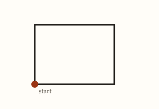
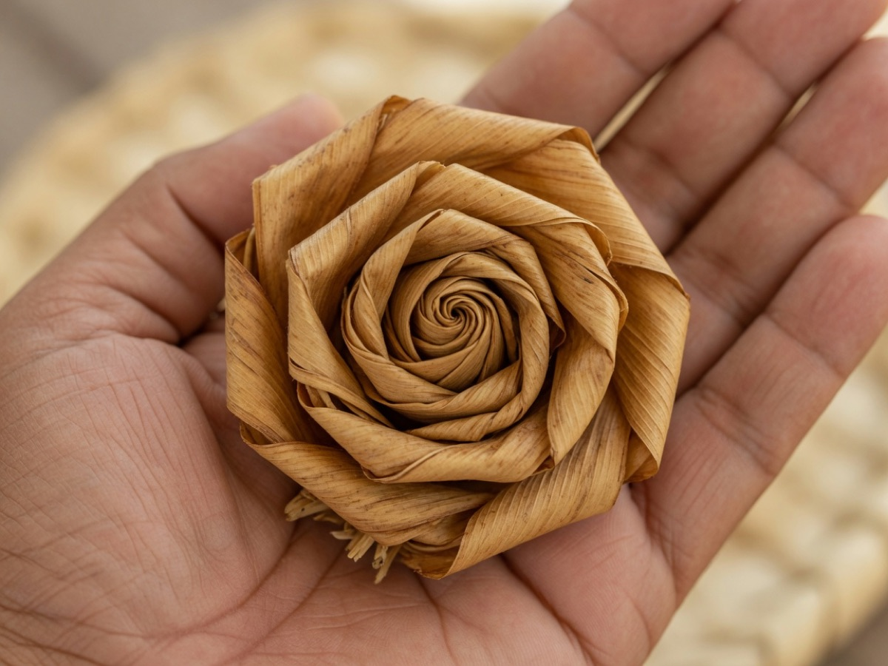
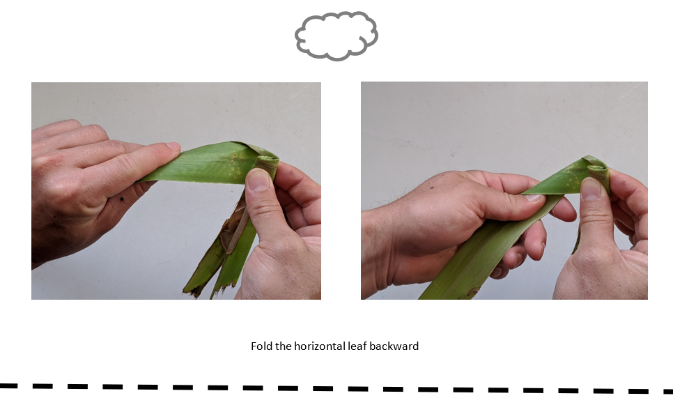
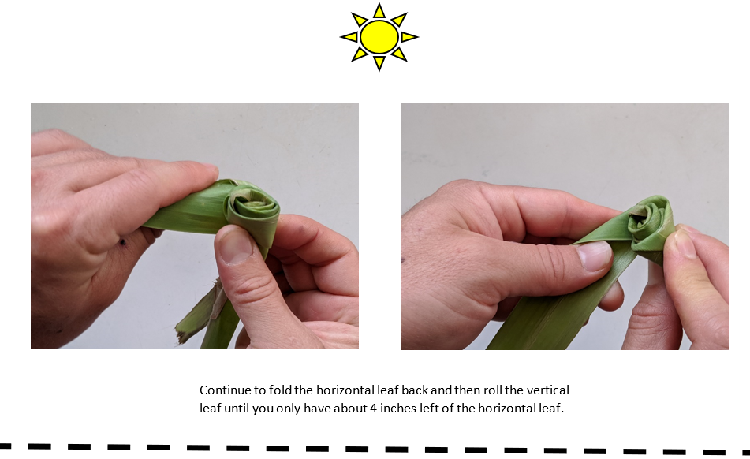
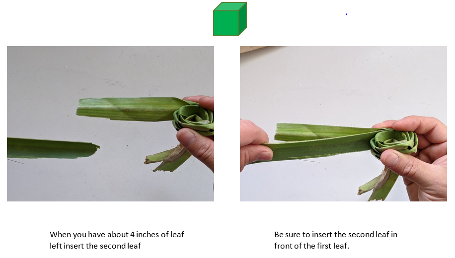

About 5 minutes. Goal: know what you will learn and make.


Lauhala is the shared example. Weavers follow instructions, keep an order, repeat a motion, and decide when to add more leaf. This is not a weaving certificate. You do not need real leaves or a code.org account.
You can name the route: Start, the pre-check, the topics, then the closing questions.
About 12 minutes. Goal: a personal algorithm, a revision, and a sort.
An algorithm is a sequence of instructions for accomplishing a task. A recipe is an algorithm. A dishwasher cycle is an algorithm. Native Hawaiian weavers followed an algorithm when they made a sail or a mat. No computer was required.
A wrong list is still an algorithm. It is just not the one you wanted. A program expresses instructions in a form a computer can execute. Algorithms are not only for people. A program can run and still do the wrong thing.
Paper cards a person reads out loud are instructions a person follows here. Blocks snapped under a When run block are an executable program. The same cards with two steps swapped are still instructions. They are the wrong order. The square blocks in the video draw a square. They do not weave the rose.
About 15 minutes. Goal: name sequence, loop, conditional, and program in everyday examples.
Shoes on, then walk out, then done. A sequence is actions in a specific order. A list in the wrong order is still a sequence. It is just not the one you wanted.
Stir, stir, stir until the sauce is thick. The repeated body is the stirring. The stopping condition is “until thick.”
If it is raining, take an umbrella. Otherwise leave it. The condition is the rain. The action is taking the umbrella or leaving it.
A program is instructions expressed so a machine can run them. A recipe on paper is an algorithm. That recipe written so a machine can follow it is a program.
About 15 minutes. Goal: a saved photo order, one dependency, and a tea sequence whose rules are on this page.
Lauhala is the dried leaf of the hala tree. Hawaiian weavers used it for mats, baskets, and sails because it can get wet and keep its shape. A lauhala rose is a small coiled flower made from a strip of that leaf. You hold one strip as a base, fold another strip over it, and roll. You keep folding and rolling. When the coil is the size you want, you finish and secure it.
This page is virtual. You do not need real leaves. The photos are the reference. The simplified model below is not a complete set of physical weaving directions. The full ten-card order is still being checked with a weaver, so this topic does not grade that order as correct or incorrect. It saves the order you propose.

About 10 minutes. Goal: map the rose list, build a model, and say what a longer leaf changes.
The whole ordered list is the algorithm. Repeated fold-and-roll is a loop. “If about four inches of strip remain, add a new strip” is a conditional. This model describes weaving instructions. The computer on this page does not weave.


About 25 minutes. Goal: build a square, a hexagon, and a pattern with blocks.
Run shows the path. Check scores the puzzle named on the button. The code and the drawing stay on this page together.
The drawing shows up here after Run.
Worked example. Four equal moves and a quarter turn, written as a repeat:
Predict, then build, then Run. The path starts at the dot. The first move leaves that dot. This task is only the square.
About 20 minutes. Goal: three screens you can walk, including a way back.
A button press is an event. It runs an instruction: go to the screen you chose. The computer runs the program. The person supplies the tap. The preview uses your destinations. It does not follow a hidden Next sequence.
Dried hala leaf used for mats and sails.
Button A, How to coil, goes to screen 2.
Hold a base strip, fold, and roll.
Button A, See the rose, goes to screen 3. Button B, Back, goes to screen 1.
A tight coil that looks like a small flower.
Button A, Start over, goes to screen 1.
If Button A on screen 2 points at screen 2, the preview stays put. Point it at screen 3, then try the walk again.
About 2 minutes. Goal: connect the algorithm, the program the computer ran, and the output.
Your drawing and app show up here.